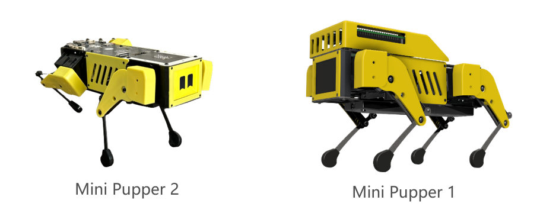
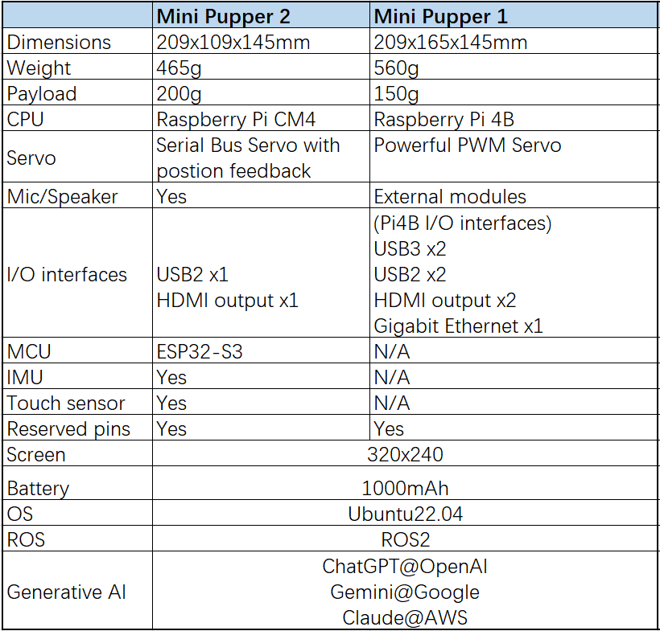
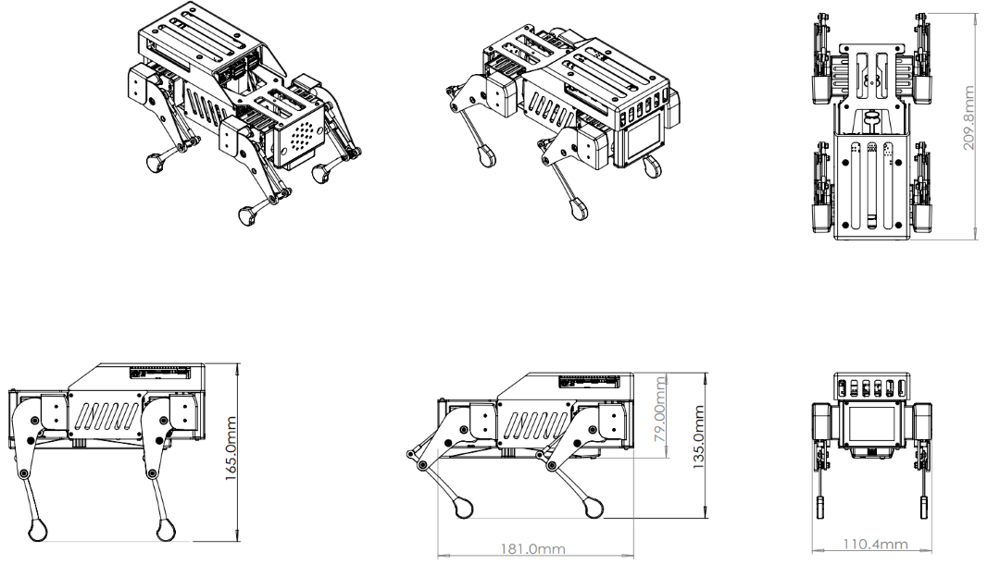
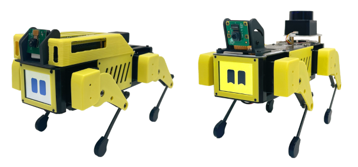
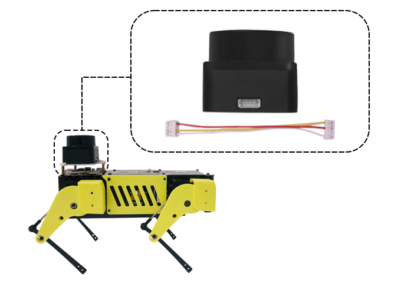

特徴
ハードウェア仕様
Mini Pupper 1ディメンション
アドオン
Lidar モジュール
ROS SLAM、Lidarに基づくナビゲーション機能を探求したい場合、Lidarモジュールも必要です。私たちはSTL-06P Lidarモジュールが私たちのソースコードに基づいてうまく動作することを保証するだけであり、他のチャネルから入手することを保証するものではありません。私たちはLidar ケーブルをカスタマイズし、かさばるワイヤーを使わず、ロボットを簡単に接続できるようにしました。
カメラモジュール
OpenCVカメラのAI機能を探求したい場合は、Raspberry Pi v2やv1.3カメラモジュールなど、単一のMIPIカメラを選択することができます。